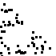
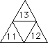
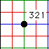
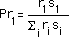

| Given IFS rules, the Deterministic Algorithm
renders a picture of the fractal by |
| 1. applying all the rules to any (compact) initial picture, |
| 2. then applying all the rules to the resulting picture, |
| 3. and continuing this process. |
|
| Regardless of the starting shape, this sequence of pictures converges to a
unique limiting shape,
the only (compact) set invariant under simultaneous application of
all the rules. |
| The Random Algorithm is another method of rendering the fractal
determined by a given set of rules, T1, ..., TN. In this section
we explore this method for producing fractals. |
|  |
Definition and illustration of the random algorithm |
 |
This leads to the question What is random? |
|  |
To understand why the Random and Deterministic algorithms generate the same pictures,
we also need to understand the notion of the address
of parts of a fractal. |
|  |
Now we can show why the Random and Deterministic algorithms generate the
same picture. |
|  |
The role of probability in the Random
algorithm, including how to calculate it from the IFS
parameters. |
|